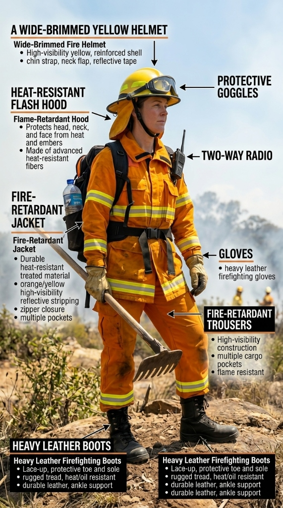

A Day in the Life
Step into the boots of a firefighter during a high-risk season. Click a time to see the mission.
Knowing the "Wind Change" time is the most critical piece of info for safety.

Dressed for Defence: PPE
-
apparel Proban Coat & Trousers
Bushfire gear is surprisingly light. Instead of the heavy, thick suits worn for house fires, bush firefighters wear yellow "two-piece" suits made from Proban—a chemically treated cotton that won't catch fire but allows heat to escape so they don't get heatstroke.
-
visibility Goggles & Flash Hood
Smoke and falling embers are constant dangers. Firefighters wear tight-sealing goggles and a Nomex "flash hood" that covers their entire neck and face, leaving only an opening for their eyes and a respirator mask.
-
shelves Fire Blanket
As a last resort, every truck carries heavy fire blankets. If a crew is trapped by fire overrun, their truck cabins are reinforced to act as a shield, and they hide below the windows under the blankets while the fire passes.
record_voice_over From the Frontline
"The wind change came through at 2:14 PM. In under four minutes, a fire that had been burning north for three hours turned and started running east. We had to pull the crew off the line immediately — you can't outrun a wind-driven fire. You get out, reassess, and find the next defendable point."
— Senior Crew Leader, NSW Rural Fire Service, Black Summer 2019-20
Tactics & Technology
Fighting a bushfire is like a game of chess. Fire chiefs use meteorological data—wind speed, temperature, and humidity—to predict where the fire will move next, rather than just chasing the flames.
Satellites & Drones arrow_forward
Satellites track "hotspots" from space, giving commanders a nationwide view. Meanwhile, drones equipped with infrared cameras can fly over dark, smoky valleys to safely locate spot fires without risking a human pilot's life.
Aerial Support (LATs) arrow_forward
When fires are too big for ground crews, Large Air Tankers (LATs)—often converted commercial jets like Boeing 737s—drop thousands of liters of bright red fire retardant ahead of the fire to slow its progress.
Backburning arrow_forward
Firefighters often "starve" the fire. Ground crews clear vegetation to create a containment line, and then light a smaller, controlled fire directly in front of the main wildfire to burn up the fuel before the monster reaches them.
The ICS System
During a major disaster, police, ambulances, army units, and multiple fire brigades all arrive at once. How do they not get in each other's way?
They use the Incident Control System (ICS). Under ICS, one person (the Incident Controller) is in charge of the entire fire. Below them, responsibilities are split into Planning (looking at maps/weather), Logistics (getting food and fuel), and Operations (putting water on the fire). Everyone speaks the same language, making coordination seamless.
The Recovery Phase
Operation Bushfire Assist
The 2019-20 season triggered the largest ever peacetime deployment of the Australian Defence Force. Army engineers cleared 1,400 kilometres of road blocked by fallen trees before civilian traffic could re-enter fire zones. This alone took three weeks of around-the-clock work.
Wildlife Rescue
Nearly 3 billion animals were impacted. WIRES fielded over 50,000 emergency calls. Local vets and volunteers worked in makeshift backyard shelters to treat burns, supported by a $50 million federal recovery fund.
Stricter Rebuilding
New "BAL" (Bushfire Attack Level) ratings now require new homes in risk zones to have double-glazed glass, non-combustible mesh on all vents, and ember-proof roof cladding as standard.
Explore More
Fire Science
Discover the physics of fire behavior and intensity calculation.
Prevention & Prep
The most important first line of defence is knowing how to prepare your property.
Black Summer (2019-20)
A massive example of coordination and front-line response across multiple states.